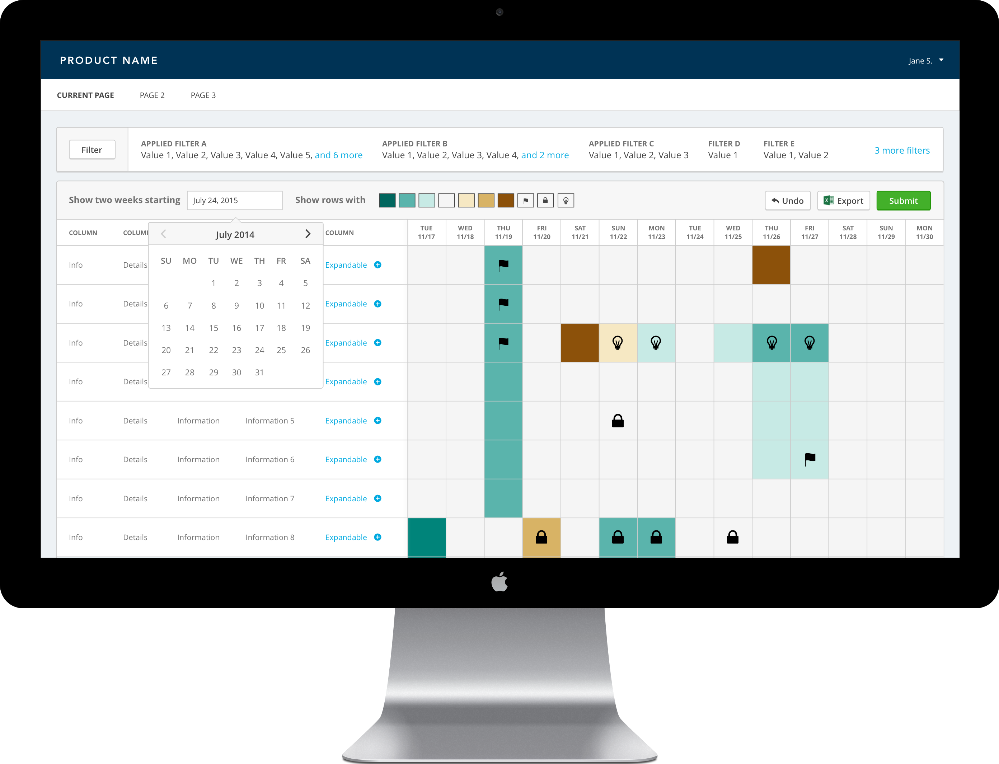
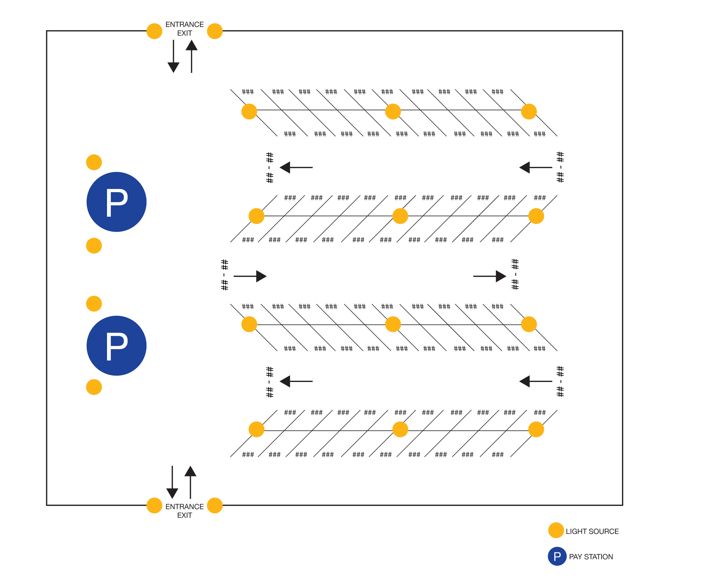
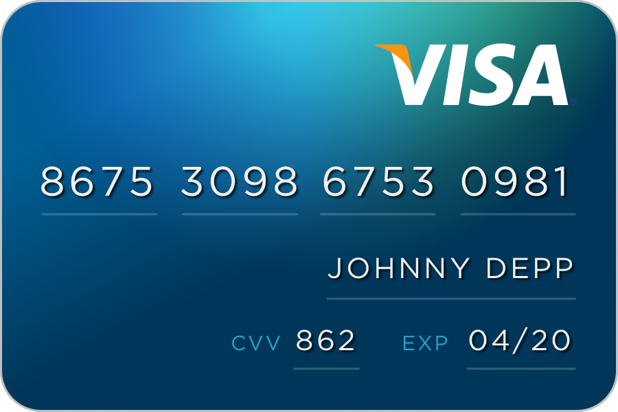

Hi! Nice to E-Meet You.
I'm a user-friendly designer in love with turning complex problems into intuitive, elegant solutions.

Chronopod (Mobile)
This app concept is a result of a 72-hour solo design challenge to create a time travel app. My responsibilities included scoping the product, defining the persona, research, wireframing, and hi-fi designs.LEARN MORE →

Analytics App (Mobile)
A challenging project to provide a mobile user with the ability to analyze complex charts and graphs. My contributions to the project included wireframing, documentating gesture interactions, and hi-fi designs.LEARN MORE →

Forecaster (Desktop)
This web app was built for very analytical desktop users. I was responsible for collaborating with product managers, understanding the dev team's technical constraints, and redesigning the main interface.LEARN MORE →

HCI Methods Project
This was a group design project for a course in HCI methods at Rice University. Our group was tasked with improving the usability of surface parking pay station interfaces.LEARN MORE →

Miscellaneous
Random design tidbits that I made to practice my skills and/or just to have fun. Included are Daily UI challenges, graphic design projects, and more.LEARN MORE →